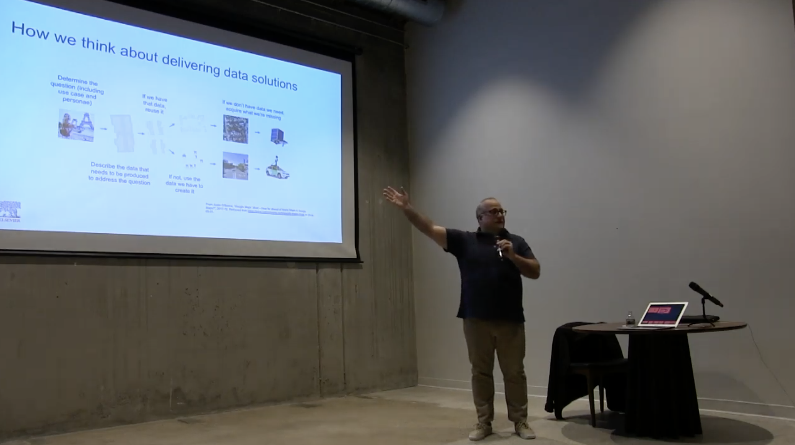
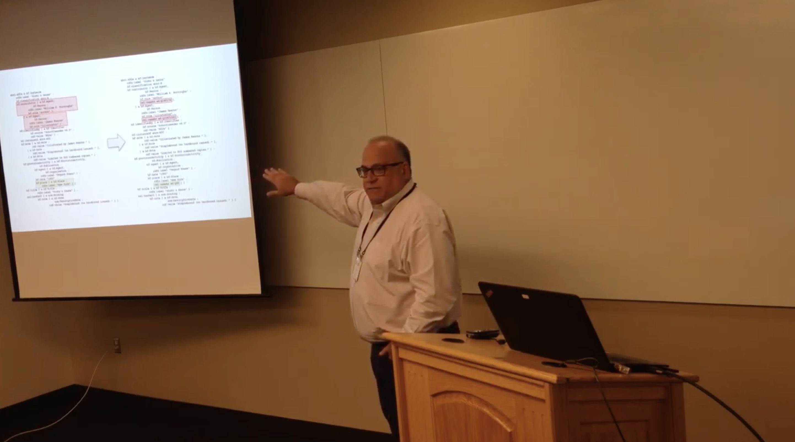

<meta name="viewport" content="width=device-width, initial-scale=1">
<link rel="stylesheet" href="resources/styles.css">
<style>
	.markdown-body {
		box-sizing: border-box;
		min-width: 200px;
		max-width: 980px;
		margin: 0 auto;
		padding: 45px;
	}

	@media (max-width: 767px) {
		.markdown-body {
			padding: 15px;
		}
	}
</style>
<article class="markdown-body">

<h1>
<a id="user-content-bradley-p-allen" class="anchor" href="#bradley-p-allen" aria-hidden="true"><span aria-hidden="true" class="octicon octicon-link"></span></a>Bradley P. Allen</h1>
<p><a href="https://twitter.com/bradleypallen/" rel="nofollow"></a>
<a href="https://github.com/bradleypallen/"></a>
<a href="https://scholar.google.com/citations?hl=en&amp;user=cdQ_HrAAAAAJ" rel="nofollow"></a></p>
<table>
<thead>
<tr>
<th><a href="https://www.youtube.com/watch?v=2yKJ1CA9FYU" rel="nofollow"></a></th>
<th>Brad Allen is <a href="https://www.linkedin.com/in/bpallen" rel="nofollow"><strong>a technology executive and serial entrepreneur</strong></a>, and currently Chief Architect at Merit, a Bay Area startup building a verified identity platform. Previously, Brad was Chief Architect at Elsevier, and before that, founder/CTO at three startups in the Los Angeles area, achieving successful exits in two of the three. Brad began his career during the 1980s as <a href="https://archive.computerhistory.org/resources/access/text/2020/04/102740341-05-01-acc.pdf" rel="nofollow"><strong>one of the very first knowledge engineers of the expert systems era</strong></a>, after earning a BS in Applied Mathematics at Carnegie Mellon University.</th>
</tr>
</thead>
<tbody>
<tr>
<td><a href="https://www.youtube.com/watch?v=cK3yKFhDyxs" rel="nofollow"></a></td>
<td>A major part of Brad's work is as <a href="https://www.youtube.com/watch?v=cK3yKFhDyxs" rel="nofollow"><strong>an architect of data platforms for business transformation</strong></a>. In this presentation to the Harvard Data Science Initiative, Brad discusses data science in practice at Elsevier, detailing the business motivations, the organization, and how data science over scientific content and data is enabling the delivery of new products to Elsevier's customers.</td>
</tr>
<tr>
<td><a href="https://www.youtube.com/watch?v=rZYpHD5wktg" rel="nofollow"></a></td>
<td>Brad is also <a href="https://www.youtube.com/watch?v=rZYpHD5wktg" rel="nofollow"><strong>an innovator in the commercial application of machine learning</strong></a>. At this LA Machine Learning Meetup event in February 2019, Brad discusses his and his Elsevier colleagues' work towards using machine learning to understand scientific and medical content.</td>
</tr>
<tr>
<td><a href="https://docs.google.com/presentation/d/1-0JL3LL7-GbUQkbSHi8k6pQNlfv-3D5YAdwcZh-9auQ/edit?usp=sharing" rel="nofollow"></a></td>
<td>Brad's focus on these areas also has application to his personal interest as <a href="https://wsburroughs.link/" rel="nofollow"><strong>a book collector specializing in the works of William S. Burroughs</strong></a>, the American Beat Generation author. In this talk at the 2019 LD4 Conference on Linked Data in Libraries, Brad describes his work on the use of library linked open data standards to publish scholarly bibliographical data about his collection.</td>
</tr>
</tbody>
</table>
<p><em>Copyright © 2021 Bradley P. Allen. All rights reserved.</em></p>


</article>
